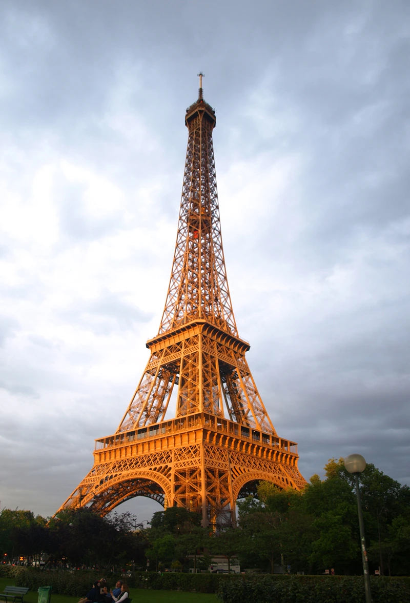
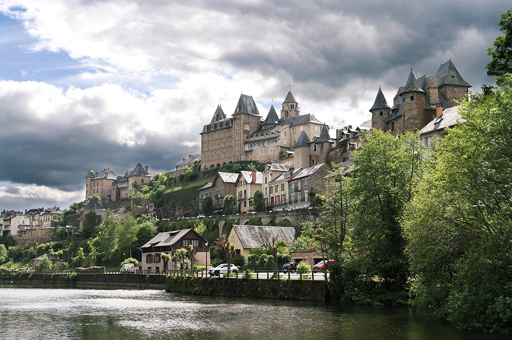
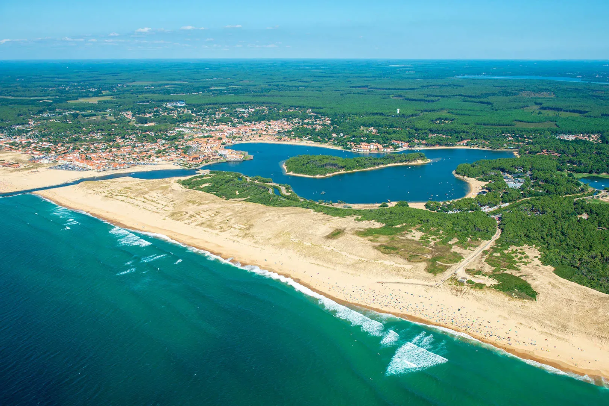
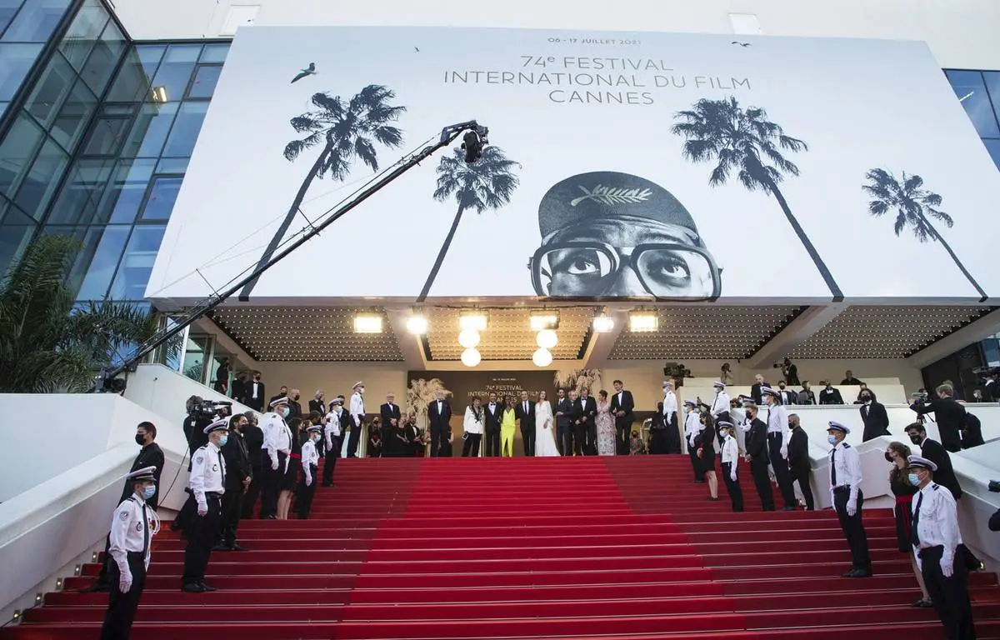
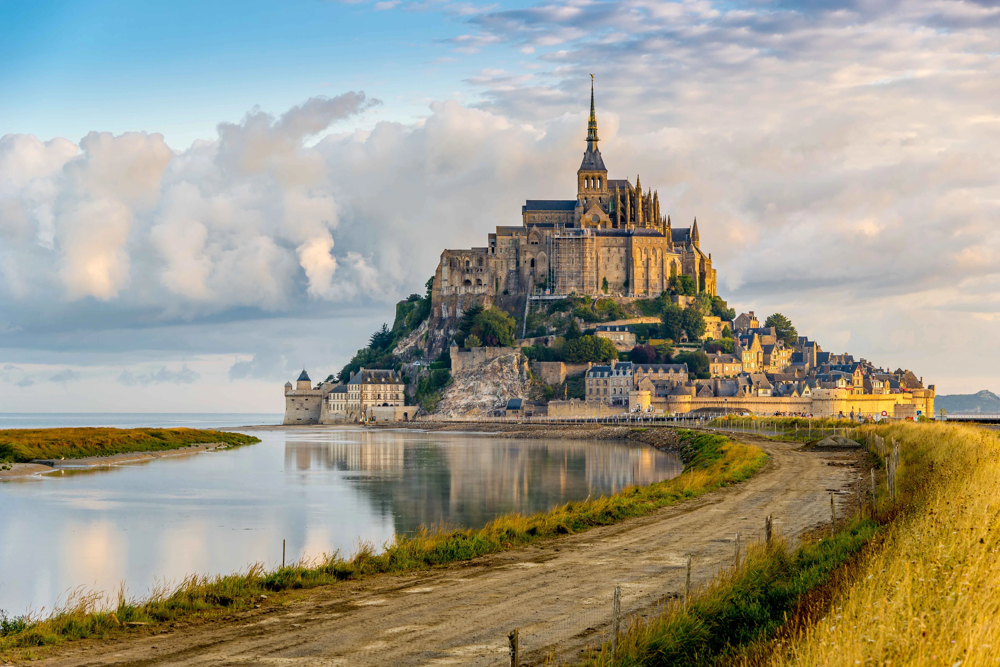

The Eager Little Antenna
I may be smaller than some of my older siblings, but I like to think of myself as a diligent antenna that picks up influences from all over the globe. Then, in my own excited way, I beam them back out with a hint of baguettes, a dab of art, and a fondness for lively cafés. You might say I’m always a little starstruck, trying to impress everyone with my flavors and style.


Paris—some call it “La Ville Lumière,” and I like to think it shines brightly enough for me to share a few sparks of inspiration with my older brothers and sisters out there. You never know what hidden joys you might uncover wandering my streets and sipping espresso at dawn. I’m not trying to outshine anyone; I just really love showing off my best side.
Culture, Connections & Croissants
I’ve always been fascinated by how my little quirks can connect with everyone else. My language bounces around the globe, and so does my food—trust me, I squeal with joy each time I see my cousins around the world attempt macarons or crêpes. Sure, I’ve got a flair for fashion, but that’s just because I love feeling fancy and hope it inspires everyone else to celebrate their own style, too.
Sometimes I look back at my history—Voltaire’s witty lines or Monet’s tender brushstrokes—and blush, wondering how I got so lucky to host such creativity. I didn’t do much, just offered them a place to ponder and paint. But I do like to imagine these ideas radiating out from my cafés and museums to spark fresh thinking across the continent.


Some Random Antenna Stories
- My dear Eiffel Tower once served as a communications antenna—spying on enemy signals and sending out strategic messages. I like to think it stood tall, almost like a big sibling protecting me.
- The Louvre Museum holds hundreds of thousands of art pieces. I might be overenthusiastic, but I see it as a giant showcase of everything I’ve collected, curated, and proudly want to share with my older family members.
- Mont-Saint-Michel seems a bit mystical, perched between the tides. I always imagine it quietly whispering tales of land and sea to passing visitors, bridging worlds like an antenna between different realms.
- They say that back in the Enlightenment days, my coffeehouses broadcast all sorts of budding ideas. I wasn’t fully grown then, but I sure felt special being the meeting spot for dreamers who would soon spread their wisdom beyond my borders.

Today: My Ongoing Chat with the World
These days, I try to keep up by sharing films at Cannes and encouraging tech ventures in Paris. Sure, I’m still the same kid who loves a good pastry, but I also hope my little signals of culture, creativity, and ambition reach others who can help me grow. If you’re curious, take a peek at all the stories we exchange there.
I’ll admit there have been moments that tested my spirit. In 2019, when Notre-Dame caught fire, I felt like a piece of me was burning away, too. But, wow, did my siblings around the globe ever come running to help. The support reminded me that even if I’m the smaller one in this big family, I can stand tall when friends and neighbors lift me up. It showed me how deeply we’re all connected—like antennas sharing one big frequency of hope.
Maybe I’m still figuring out how to juggle my storied past and my modern goals, but I’d like to think I’ll keep collecting and broadcasting the best of both worlds. From painting to programming, I’m just thankful for the chance to stand among my siblings, wave my antenna around, and share whatever brightness I can. Merci beaucoup for letting me beam these thoughts your way!
Explore More About France